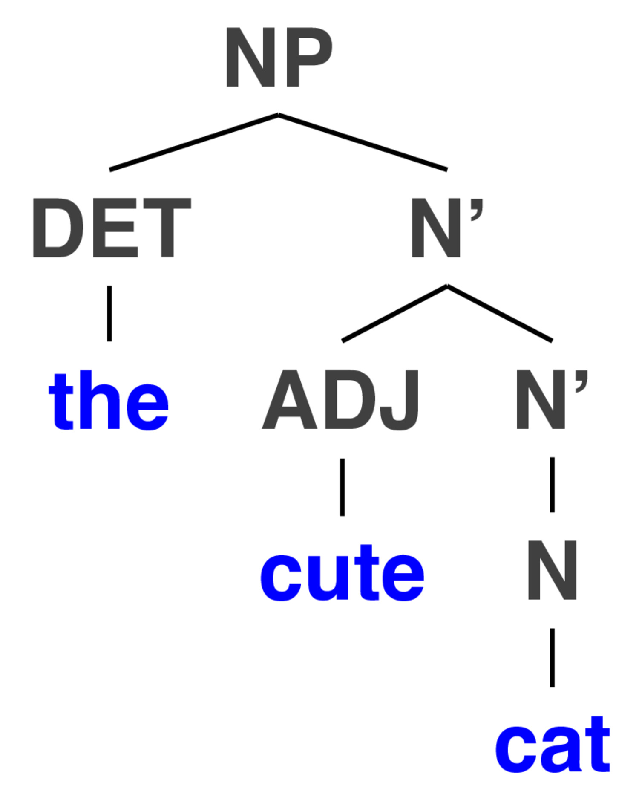

Syntactic Phrase Structure
Will Styler - LIGN 6
Today’s Plan
Phrase Structure Rules
Structural Ambiguity
Last time, we talked
about constituents
Noun Phrases
Verb Phrases
Prepositional Phrases
… and we
realized that the world of syntax isn’t flat
- (Neither is the rest of the world, damnit)
Now, let’s
think a bit more about those structures
Phrase Structure Rules
We
have intuitions about what can be inside a noun phrase in English…
The big, strong rhinoceros
*The big, quickly rhinoceros
*The strong, charged rhinoceros
A verb phrase has
constraints in English
I hugged the small kitten
*I small hugged the kitten
*I hugged gently the kitten (???)
And sentences
definitely have rules in English
Sam sent Amanda to the store.
*Sent Sam Amanda to the store.
*Amanda Sam to the store sent.
So, English
has rules about how phrases are built
- … that sounds like a language model to me!
Today,
we’ll talk about a very basic approach to modeling syntax
Phrase Structure Rules
X → Y Z
S → NP VP
- “A sentence is composed of an NP, followed by a VP”

Phrase
structure rules are like building blocks of sentences
How do we build trees?
Building a phrase structure
tree
Step 1: Find constituents and think about what kinds of
phrases they are
- “Huh, this is a preposition. There’s gotta be a PP around
here…”
Step 2: Start stitching constituents together according to our PS
rules
Step 3: Check to make sure every branching obeys the phrase
structure rules
- “OK, this is Rule 9, now rule 1 to 2, then here’s 11…”
Step 4: A beautiful tree will grow!
A Small Phrase
Structure Grammar for English
Noun Phrase Rules
Rule 1) NP -> DET N’
Rule 3) N’ -> N


Rule 1) NP -> DET N’
Rule 3) N’ -> N

… but what if there’s no determiner?
Rule 2) NP -> N’
Rule 3) N’ -> N

Rule 2) NP -> N’
Rule 3) N’ -> N

How do we deal with
adjectives?
Rule 4) N’ -> ADJ N’
- We can combine Rule 1, Rule 4, and Rule 3…

Rules 1, 3, 4
We can combine Rule 1, Rule 4, and Rule 3…

Rules 1, 3, 4
We can combine Rule 1, Rule 4, and Rule 3…

… Rule 4 is recursive!


(… and so on)
What about
prepositions? Linguists love prepositions!
| ## Rule 5: NP -> NP PP ## Rule 6: PP -> P NP |
 |
Rules 5 and 6
“Two computational
linguists from San Diego”

Now, let’s make a sentence!
Rule 7: S -> NP VP
Rule 8: VP -> V

A very simple sentence
Adding in a preposition
(with Rule 10)

But
lots of verbs are transitive, and take a noun phrase as the
object (Rule 9)

… and we can bring old rules
back in!
… and we can bring more
old rules back in!

… and we can add on another
PP
Is this starting to feel
familiar?

Making
Syntax Trees is combining small elements to make bigger, fancier
trees


Complementizers
put sentences within sentences
- Words like “that”, “when”, “if”, “while”, “as”, and more
… we can go deeper

… and this
combines with everything we’ve been doing …

… and just keeps getting worse
…

So that’s how trees are grown
In NLP,
trees are usually stored with nested parentheses
(S (NP (NP (DET The) (N’ (ADJ proud) (N’ (N baker)))) (PP (P from)
(NP (N’ (N San Bernadino))))) (VP (V loved) (CP (C that) (S (NP (N’ (N
people))) (VP (V cheered) (CP (C as) (S (NP (N’ (N Will))) (VP (VP (V
ate) (NP (NP (DET the) (N’ (ADJ massive) (N’ (ADJ chocolate) (N’ (N
cake))))) (PP (P from)(NP (DET the) (N’ (ADJ new) (N’ (N
bakery)))))))(PP (P with) (NP (DET his) (N’ (N wife))))))))))))
We
can use these trees to understand the structure of sentences!
Things that can be ‘broken off the tree’ cleanly are
constituents
The constituency structure helps us understand the sentence
better
… because sometimes, it’s ambiguous!
Structural Ambiguity
Different
structures can imply different meanings
- The same written sentence can be treed in many different ways
I [saw the man] [with the
telescope]
I saw [the man with the
telescope]
John slapped his
friend with the smelly fish
John slapped his
friend with the smelly fish

We as
humans understand what structures are plausible

- “I used a flea-based telescope”

- “I’m from La Jolla with Fleas, not La Jolla”

- “I saw the hat of the Queen of England”
 |
| - “I saw the woman who is Queen of England’s hat” |
We need to account for this
in NLP!
You may think…

… but in reality …
Correct parts of speech are
crucial
For Next Time
- We’ll talk about automatic POS tagging
Thank you!